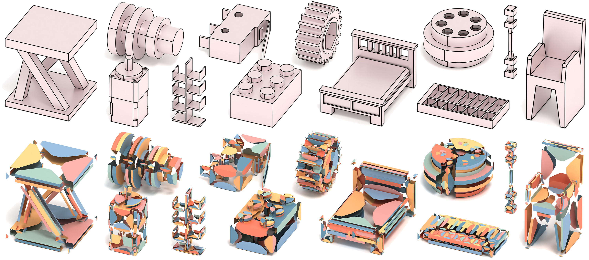
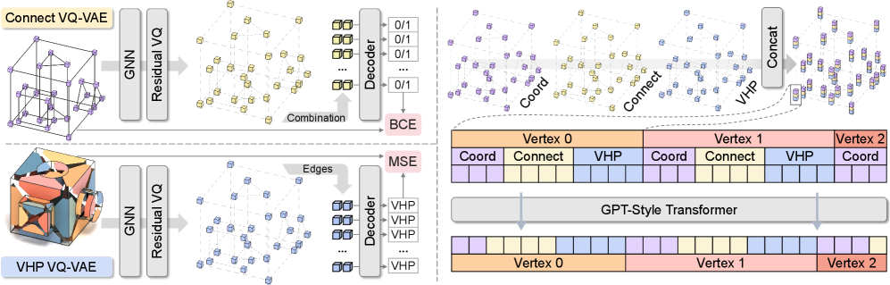
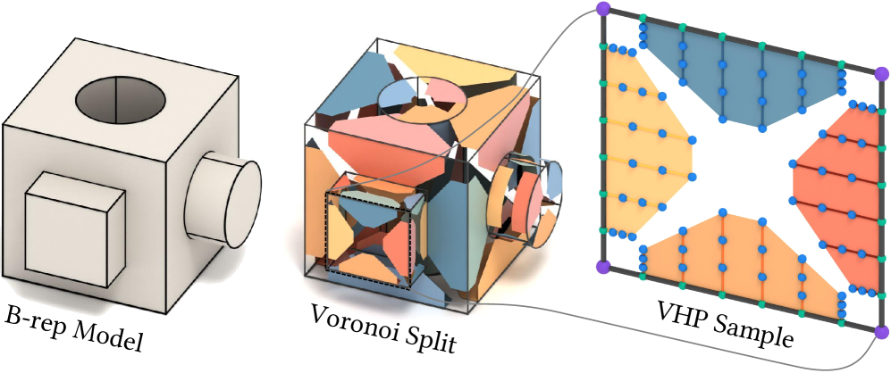
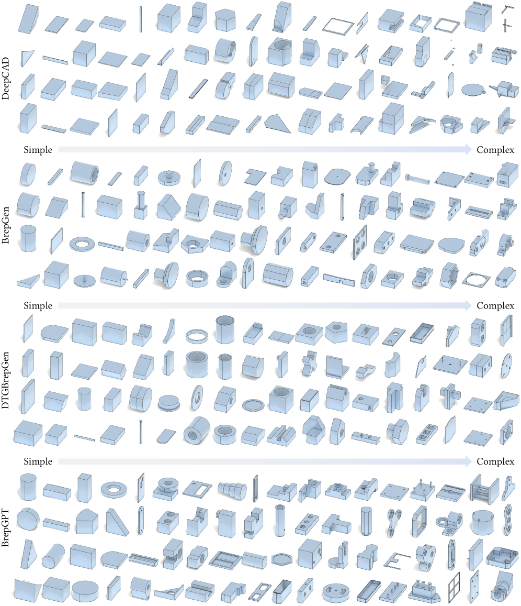
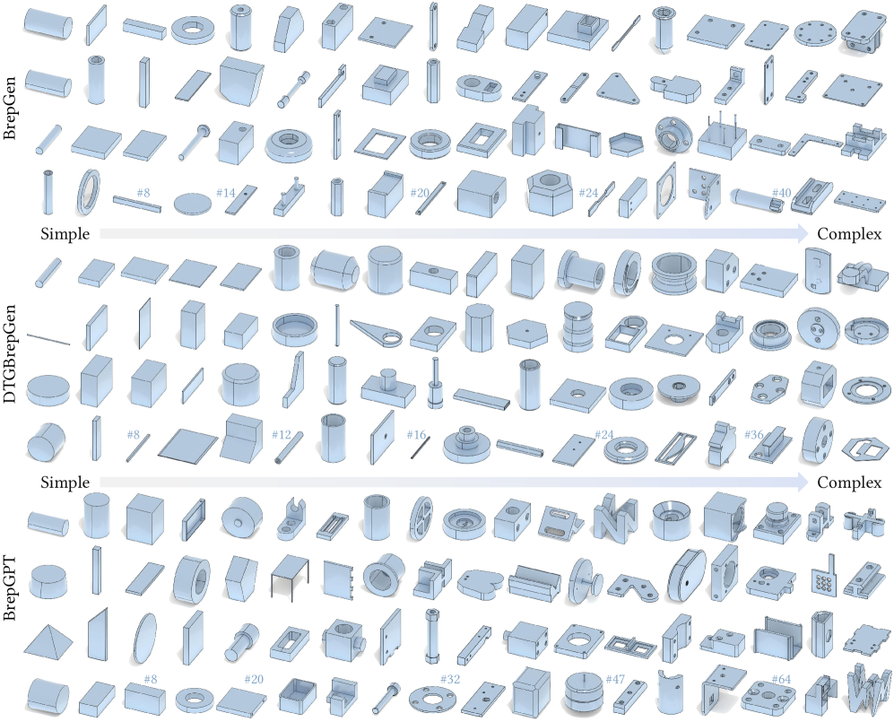

SIGGRAPH Asia 2025 · ACM Transactions on Graphics, Vol. 44, No. 6, Article 226
1MAIS, Institute of Automation, Chinese Academy of Sciences 2University of Chinese Academy of Sciences 3KAUST

Top: B-rep models generated by BrepGPT. Bottom: Visualization of corresponding Voronoi Half-Patches, where distinct colors represent regions in the parametric space of each face geometrically closest to their boundary curves.
Boundary representation (B-rep) is the de facto standard for CAD model representation in modern industrial design. The intricate coupling between geometric and topological elements in B-rep structures has forced existing generative methods to rely on multi-stage networks, resulting in error accumulation and computational inefficiency. We present BrepGPT, a single-stage autoregressive framework for B-rep generation.
Our key innovation lies in the Voronoi Half-Patch (VHP) representation, which decomposes B-reps into unified local units by assigning geometry to nearest half-edges and sampling their next pointers. Unlike hierarchical representations that require multiple distinct encodings for different structural levels, VHP unifies geometric attributes and topological relations in a single, coherent format. We further leverage dual VQ-VAEs to encode both vertex topology and VHP geometry into compact vertex-based tokens. A decoder-only Transformer then autoregressively predicts these token sequences, which are decoded into complete B-rep models.
BrepGPT achieves state-of-the-art performance in unconditional B-rep generation and supports a range of applications including conditional generation from category labels, point clouds, text, and images, as well as B-rep autocompletion and shape interpolation.




@article{li2025brepgpt,
title = {BrepGPT: Autoregressive B-rep Generation with Voronoi Half-Patch},
author = {Li, Pu and Zhang, Wenhao and Quan, Weize and Zhang, Biao and Wonka, Peter and Yan, Dong-Ming},
journal = {ACM Transactions on Graphics},
volume = {44},
number = {6},
pages = {226:1--226:18},
year = {2025},
publisher = {ACM},
doi = {10.1145/3763323}
}
© 2025 Pu Li et al. · Page template inspired by Nerfies.